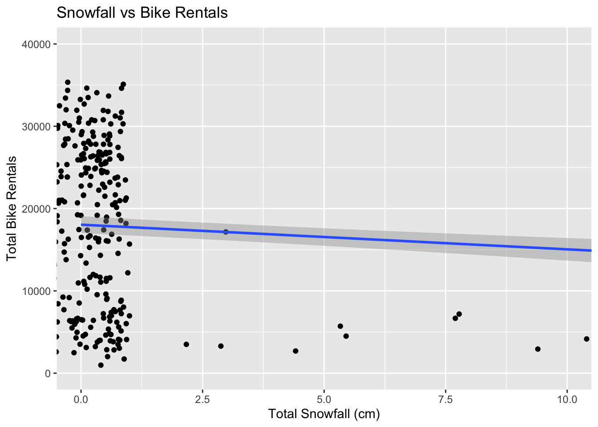
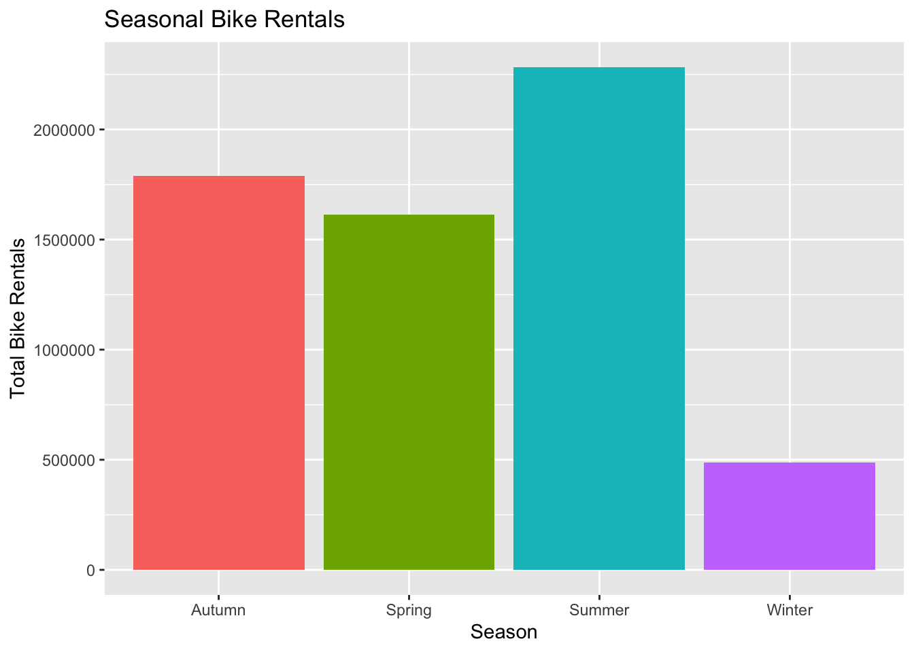
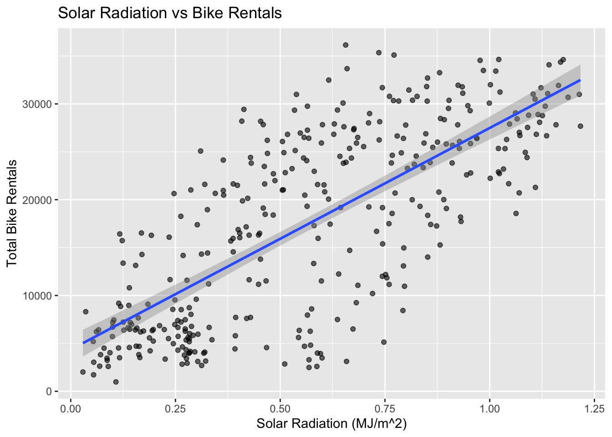
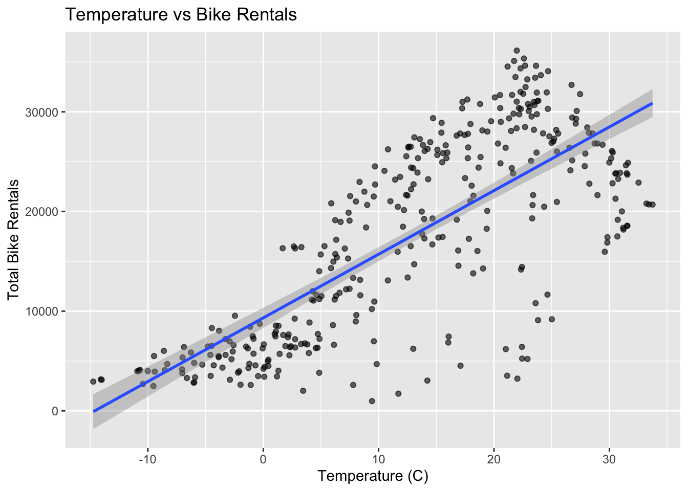

library(tidyverse)
library(readr)
library(lubridate)
library(janitor)
library(corrplot)
library(tidymodels)Homework-8
From HW 7
Basic Modeling Practice
Reading Data
In this homework, we will do some structured practice with fitting linear models in R. The dataset from the UCI Machine Learning Repository containing daily bike sharing rentals in Seoul. Our goal is to perform an exploratory data analysis, clean the data, and fit various multiple linear regression models to predict daily bike counts.
bike_data <- read_csv("SeoulBikeData.csv", locale = locale(encoding="latin1"))EDA
Data Processing
Before fitting any models, conduct basic data cleaning to prepare our data for usage. First, check for missing values and verify data types to make sure the columns were read in correctly. Check the column types and the values within the columns go make sure they make sense.
# Check structure of data
str(bike_data)spc_tbl_ [8,760 × 14] (S3: spec_tbl_df/tbl_df/tbl/data.frame)
$ Date : chr [1:8760] "01/12/2017" "01/12/2017" "01/12/2017" "01/12/2017" ...
$ Rented Bike Count : num [1:8760] 254 204 173 107 78 100 181 460 930 490 ...
$ Hour : num [1:8760] 0 1 2 3 4 5 6 7 8 9 ...
$ Temperature(°C) : num [1:8760] -5.2 -5.5 -6 -6.2 -6 -6.4 -6.6 -7.4 -7.6 -6.5 ...
$ Humidity(%) : num [1:8760] 37 38 39 40 36 37 35 38 37 27 ...
$ Wind speed (m/s) : num [1:8760] 2.2 0.8 1 0.9 2.3 1.5 1.3 0.9 1.1 0.5 ...
$ Visibility (10m) : num [1:8760] 2000 2000 2000 2000 2000 ...
$ Dew point temperature(°C): num [1:8760] -17.6 -17.6 -17.7 -17.6 -18.6 -18.7 -19.5 -19.3 -19.8 -22.4 ...
$ Solar Radiation (MJ/m2) : num [1:8760] 0 0 0 0 0 0 0 0 0.01 0.23 ...
$ Rainfall(mm) : num [1:8760] 0 0 0 0 0 0 0 0 0 0 ...
$ Snowfall (cm) : num [1:8760] 0 0 0 0 0 0 0 0 0 0 ...
$ Seasons : chr [1:8760] "Winter" "Winter" "Winter" "Winter" ...
$ Holiday : chr [1:8760] "No Holiday" "No Holiday" "No Holiday" "No Holiday" ...
$ Functioning Day : chr [1:8760] "Yes" "Yes" "Yes" "Yes" ...
- attr(*, "spec")=
.. cols(
.. Date = col_character(),
.. `Rented Bike Count` = col_double(),
.. Hour = col_double(),
.. `Temperature(°C)` = col_double(),
.. `Humidity(%)` = col_double(),
.. `Wind speed (m/s)` = col_double(),
.. `Visibility (10m)` = col_double(),
.. `Dew point temperature(°C)` = col_double(),
.. `Solar Radiation (MJ/m2)` = col_double(),
.. `Rainfall(mm)` = col_double(),
.. `Snowfall (cm)` = col_double(),
.. Seasons = col_character(),
.. Holiday = col_character(),
.. `Functioning Day` = col_character()
.. )
- attr(*, "problems")=<pointer: 0xa2ed70190> # Check for missing values
colSums(is.na(bike_data)) Date Rented Bike Count Hour
0 0 0
Temperature(°C) Humidity(%) Wind speed (m/s)
0 0 0
Visibility (10m) Dew point temperature(°C) Solar Radiation (MJ/m2)
0 0 0
Rainfall(mm) Snowfall (cm) Seasons
0 0 0
Holiday Functioning Day
0 0 None of the columns have missing values! Note that the Date column has been read in as a character type, so this column needs to be processed further. The categorical variables Seasons, Holiday, and Functioning Day have also been read in as character type, so these will be converted to factor type for later analysis. The Date column is currently stored as a character string with the format day/month/year. This will be converted into a usable date object using the lubridate library.
#Convert the Date column into an actual date
bike_clean <- bike_data |>
mutate(Date = dmy(Date))Turn the categorical variables and make sure they are read as factors.
#Turn the character variables Seasons, Holiday, and Functioning Day) into factors.
bike_clean <- bike_clean |>
mutate(Seasons = as.factor(Seasons),
Holiday = as.factor(Holiday),
`Functioning Day` = as.factor(`Functioning Day`))
head(bike_clean)# A tibble: 6 × 14
Date `Rented Bike Count` Hour `Temperature(°C)` `Humidity(%)`
<date> <dbl> <dbl> <dbl> <dbl>
1 2017-12-01 254 0 -5.2 37
2 2017-12-01 204 1 -5.5 38
3 2017-12-01 173 2 -6 39
4 2017-12-01 107 3 -6.2 40
5 2017-12-01 78 4 -6 36
6 2017-12-01 100 5 -6.4 37
# ℹ 9 more variables: `Wind speed (m/s)` <dbl>, `Visibility (10m)` <dbl>,
# `Dew point temperature(°C)` <dbl>, `Solar Radiation (MJ/m2)` <dbl>,
# `Rainfall(mm)` <dbl>, `Snowfall (cm)` <dbl>, Seasons <fct>, Holiday <fct>,
# `Functioning Day` <fct>Rename all the variables to easy names.
bike_clean <- bike_clean |>
clean_names() # Replaces all spaces with '_' and makes all letters lowercase.
names(bike_clean) [1] "date" "rented_bike_count"
[3] "hour" "temperature_c"
[5] "humidity_percent" "wind_speed_m_s"
[7] "visibility_10m" "dew_point_temperature_c"
[9] "solar_radiation_mj_m2" "rainfall_mm"
[11] "snowfall_cm" "seasons"
[13] "holiday" "functioning_day" Exploratory Data Analysis
Start completing basic exploratory data analysis (EDA). Create summary statistics as they relate to the bike rental count. View these statistics across some categorical variables as well.
# Summary of rented_bike_count variable.
summary(bike_clean$rented_bike_count) Min. 1st Qu. Median Mean 3rd Qu. Max.
0.0 191.0 504.5 704.6 1065.2 3556.0 # Find unique values for each categorical variable
unique(bike_clean$seasons)[1] Winter Spring Summer Autumn
Levels: Autumn Spring Summer Winterunique(bike_clean$holiday)[1] No Holiday Holiday
Levels: Holiday No Holidayunique(bike_clean$functioning_day)[1] Yes No
Levels: No YesSince functioning_day variable only has Yes or No values, this means that the bike sharing system was either operable or inoperable that hour. If the system was inoperable, then there is no useful information about bike rentals for that hour. In this case, remove observations that show the system was not operating.
table(bike_clean$functioning_day) # 295 "No " observations
No Yes
295 8465 bike_clean <- bike_clean |>
filter(functioning_day == "Yes")The data is currently given as hourly observations. Summarize across the hours so that each day has one observation associated with it. Group the data by date, seasons, and holiday. Find the sum of the rented_bike_count, rainfall, and snowfall variables. Include the mean of all the weather related variables.
daily_bike_data <- bike_clean %>%
group_by(date, seasons, holiday) %>%
summarise(
total_bike_count = sum(rented_bike_count),
avg_temp_c = mean(temperature_c, na.rm = TRUE),
avg_humidity_pct = mean(humidity_percent, na.rm = TRUE),
avg_windspeed_m_s = mean(wind_speed_m_s, na.rm = TRUE),
avg_visibility_10m = mean(visibility_10m, na.rm = TRUE),
avg_dew_point_temp_c = mean(dew_point_temperature_c, na.rm = TRUE),
avg_solar_radiation_mj_m2 = mean(solar_radiation_mj_m2, na.rm = TRUE),
total_rainfall_mm = sum(rainfall_mm, na.rm = TRUE),
total_snowfall_cm = sum(snowfall_cm, na.rm = TRUE)
)
head(daily_bike_data)# A tibble: 6 × 12
# Groups: date, seasons [6]
date seasons holiday total_bike_count avg_temp_c avg_humidity_pct
<date> <fct> <fct> <dbl> <dbl> <dbl>
1 2017-12-01 Winter No Holiday 9539 -2.45 45.9
2 2017-12-02 Winter No Holiday 8523 1.33 62.0
3 2017-12-03 Winter No Holiday 7222 4.88 81.5
4 2017-12-04 Winter No Holiday 8729 -0.304 52.5
5 2017-12-05 Winter No Holiday 8307 -4.46 36.4
6 2017-12-06 Winter No Holiday 6669 0.0458 70.8
# ℹ 6 more variables: avg_windspeed_m_s <dbl>, avg_visibility_10m <dbl>,
# avg_dew_point_temp_c <dbl>, avg_solar_radiation_mj_m2 <dbl>,
# total_rainfall_mm <dbl>, total_snowfall_cm <dbl>The daily_bike_data tibble will be the new data that will be analyzed! Recreate the basic summary statistics and then create some plots to explore variable relationships. View a correlation matrix between numeric variables to see if the data shows any significant correlations.
# Summary of total_bike_count variable on a given day of the year.
summary(daily_bike_data$total_bike_count) Min. 1st Qu. Median Mean 3rd Qu. Max.
977 6967 18563 17485 26285 36149 Graphs
Now let’s examine some plots. First, let’s relate rainfall to total rentals.
ggplot(data = daily_bike_data,
aes(x = total_rainfall_mm, y = total_bike_count)) +
geom_jitter(width = 1) +
geom_smooth(method = "lm") +
coord_cartesian(xlim = c(0, 100), ylim = c(0, 40000)) +
labs(x = "Total Rainfall (mm)",
y = "Total Bike Rentals",
title = "Rainfall vs Bike Rentals")
It looks like an inverse relation exists between rainfall and rentals. Now let’s do the same but for snowfall. One would assume a similar relationship exists.
ggplot(data = daily_bike_data,
aes(x = total_snowfall_cm, y = total_bike_count)) +
geom_jitter(width = 1) +
geom_smooth(method = "lm") +
coord_cartesian(xlim = c(0, 10), ylim = c(0, 40000)) +
labs(x = "Total Snowfall (cm)",
y = "Total Bike Rentals",
title = "Snowfall vs Bike Rentals")
Not surprisingly, this seems more stark; after all, snow is more dangerous for bike rides and some people even prefer to ride in the rain. Let’s examine the rentals across each of the four seasons.
ggplot(data = daily_bike_data,
aes(x = seasons, y = total_bike_count, fill = seasons)) +
geom_col() +
labs(x = "Season",
y = "Total Bike Rentals",
title = "Seasonal Bike Rentals") +
theme(legend.position = "none")
It appears people prefer sunny weather or cooler, but not frigid, temperatures, and this is practical. Let’s touch on this last thought with two more comparisons: solar radiation and temperature, respectively.
ggplot(data = daily_bike_data,
aes(x = avg_solar_radiation_mj_m2, y = total_bike_count)) +
geom_point(alpha = 0.6) +
geom_smooth(method = "lm") +
labs(x = "Solar Radiation (MJ/m^2)",
y = "Total Bike Rentals",
title = "Solar Radiation vs Bike Rentals")
Indeed, sunnier weather seems directly proportional to bike rentals, albeit not within as narrow a band as our rain or snow fall.
ggplot(data = daily_bike_data,
aes(x = avg_temp_c, y = total_bike_count)) +
geom_point(alpha = 0.6) +
geom_smooth(method = "lm") +
labs(x = "Temperature (C)",
y = "Total Bike Rentals",
title = "Temperature vs Bike Rentals")
As with the sunnier weather, temperature seems directly proportional to bike rentals.
num_vars <- daily_bike_data[ , 4:12]
corrplot(cor(num_vars))
By looking at the correlation plot above, the total bike rental count has a strong, positive correlation with the average temperature and solar radiation. This makes sense as more bikes being rented on a warm, sunny day rather than a cold, cloudy day.
Split the Data
Splitting daily_bike_data into training and testing sets (75/25 split).
set.seed(75)
bike_split <- initial_split(daily_bike_data, prop = 0.75, strata = seasons)
bike_train <- training(bike_split)
bike_test <- testing(bike_split)Create a 10 fold cross-validation (CV) split on the training set.
bike_folds <- vfold_cv(bike_train, v = 10)Fitting MLR Models
Bike data is ready for fitting linear regression models! First, create some recipes.
For the 1st recipe, ignore the date variable for modeling and instead use it to create a weekday/weekend (factor) variable.
bike_recipe_1 <- recipe(total_bike_count ~ ., data = bike_train) |>
update_role(date, new_role = "ID") |> # Give 'date' an ID to keep it, but not for modeling.
step_date(date, features = "dow", label = TRUE) |> # Pull out week days from date.
# Create new weekday/weekend factor variable.
step_mutate(
day_type = factor(if_else(date_dow %in% c("Sat", "Sun"), "weekend", "weekday"))) |>
step_rm(date_dow) |> # Remove intermediate day of week variable.
step_normalize(all_numeric_predictors()) |> # Standardize num vars.
step_dummy(all_nominal_predictors()) |> # Dummy variables for cat vars.
step_zv(all_predictors()) # For zero-variance predictor that has no information within the column.
# Check summary
summary(bike_recipe_1)# A tibble: 12 × 4
variable type role source
<chr> <list> <chr> <chr>
1 date <chr [1]> ID original
2 seasons <chr [3]> predictor original
3 holiday <chr [3]> predictor original
4 avg_temp_c <chr [2]> predictor original
5 avg_humidity_pct <chr [2]> predictor original
6 avg_windspeed_m_s <chr [2]> predictor original
7 avg_visibility_10m <chr [2]> predictor original
8 avg_dew_point_temp_c <chr [2]> predictor original
9 avg_solar_radiation_mj_m2 <chr [2]> predictor original
10 total_rainfall_mm <chr [2]> predictor original
11 total_snowfall_cm <chr [2]> predictor original
12 total_bike_count <chr [2]> outcome originalFor the 2nd recipe, repeat the steps above, as in recipe 1, but now add in interactions between seasons and holiday, seasons and temp, temp and rainfall.
bike_recipe_2 <- recipe(total_bike_count ~ ., data = bike_train) |>
update_role(date, new_role = "ID") |> # Give 'date' an ID
step_date(date, features = "dow", label = TRUE) |> # Pull out week days
# Create weekday/weekend variable
step_mutate(
day_type = factor(if_else(date_dow %in% c("Sat", "Sun"), "weekend", "weekday"))) |>
step_rm(date_dow) |> # Remove intermediate variable
step_normalize(all_numeric_predictors()) |> # Standardize
step_dummy(all_nominal_predictors()) |> # Dummy variables
# Interactions
step_interact( ~ starts_with("seasons_"):starts_with("holiday_")) |> # seasons x holiday
step_interact( ~ starts_with("seasons_"):starts_with("avg_temp_c")) |> # seasons x temp
step_interact( ~ starts_with("avg_temp_c"):starts_with("total_rainfall_mm")) |> # temp x rainfall
step_zv(all_predictors())
summary(bike_recipe_2)# A tibble: 12 × 4
variable type role source
<chr> <list> <chr> <chr>
1 date <chr [1]> ID original
2 seasons <chr [3]> predictor original
3 holiday <chr [3]> predictor original
4 avg_temp_c <chr [2]> predictor original
5 avg_humidity_pct <chr [2]> predictor original
6 avg_windspeed_m_s <chr [2]> predictor original
7 avg_visibility_10m <chr [2]> predictor original
8 avg_dew_point_temp_c <chr [2]> predictor original
9 avg_solar_radiation_mj_m2 <chr [2]> predictor original
10 total_rainfall_mm <chr [2]> predictor original
11 total_snowfall_cm <chr [2]> predictor original
12 total_bike_count <chr [2]> outcome originalFor the 3rd and final recipe, repeat the steps above, as in recipe 2, but now add in quadratic terms for each numeric predictor.
bike_recipe_3 <- recipe(total_bike_count ~ ., data = bike_train) |>
update_role(date, new_role = "ID") |> # Give 'date' an ID
step_date(date, features = "dow", label = TRUE) |> # Pull out week days
# Create weekday/weekend variable
step_mutate(
day_type = factor(if_else(date_dow %in% c("Sat", "Sun"), "weekend", "weekday"))) |>
step_rm(date_dow) |> # Remove intermediate variable
step_poly(all_numeric_predictors(), degree = 2) |> # ADD IN QUADRATIC TERMS
step_normalize(all_numeric_predictors()) |> # Standardize
step_dummy(all_nominal_predictors()) |> # Dummy variables
# Interactions
step_interact( ~ starts_with("seasons_"):starts_with("holiday_")) |> # seasons x holiday
step_interact( ~ starts_with("seasons_"):starts_with("avg_temp_c")) |> # seasons x temp
step_interact( ~ starts_with("avg_temp_c"):starts_with("total_rainfall_mm")) |> # temp x rainfall
step_zv(all_predictors())
summary(bike_recipe_3)# A tibble: 12 × 4
variable type role source
<chr> <list> <chr> <chr>
1 date <chr [1]> ID original
2 seasons <chr [3]> predictor original
3 holiday <chr [3]> predictor original
4 avg_temp_c <chr [2]> predictor original
5 avg_humidity_pct <chr [2]> predictor original
6 avg_windspeed_m_s <chr [2]> predictor original
7 avg_visibility_10m <chr [2]> predictor original
8 avg_dew_point_temp_c <chr [2]> predictor original
9 avg_solar_radiation_mj_m2 <chr [2]> predictor original
10 total_rainfall_mm <chr [2]> predictor original
11 total_snowfall_cm <chr [2]> predictor original
12 total_bike_count <chr [2]> outcome originalFinally, set up linear model fit to use the “lm” engine. Fit the models using 10 fold CV, then consider the training set CV error to choose a best model.
library(parsnip)
library(workflows)
library(broom)Here, start by building a model specification. As stated earlier, using a linear model on bike data.
lm_mod <-
linear_reg() |>
set_engine("lm")Then, create some model workflows, which pair models and recipes together. Do this for all three recipes.
bike_wf1 <-
workflow() |>
add_model(lm_mod) |>
add_recipe(bike_recipe_1)
bike_wf2 <-
workflow() |>
add_model(lm_mod) |>
add_recipe(bike_recipe_2)
bike_wf3 <-
workflow() |>
add_model(lm_mod) |>
add_recipe(bike_recipe_3)Next, fit the models using 10 fold CV.
set.seed(75)
cv_wf1 <- bike_wf1 |>
fit_resamples(bike_folds)
cv_wf2 <- bike_wf2 |>
fit_resamples(bike_folds)
cv_wf3 <- bike_wf3 |>
fit_resamples(bike_folds)Now, look at the training set CV error to choose the best model.
collect_metrics(cv_wf1)# A tibble: 2 × 6
.metric .estimator mean n std_err .config
<chr> <chr> <dbl> <int> <dbl> <chr>
1 rmse standard 3931. 10 200. pre0_mod0_post0
2 rsq standard 0.840 10 0.0158 pre0_mod0_post0collect_metrics(cv_wf2)# A tibble: 2 × 6
.metric .estimator mean n std_err .config
<chr> <chr> <dbl> <int> <dbl> <chr>
1 rmse standard 3099. 10 260. pre0_mod0_post0
2 rsq standard 0.900 10 0.0173 pre0_mod0_post0collect_metrics(cv_wf3) # Lowest RMSE# A tibble: 2 × 6
.metric .estimator mean n std_err .config
<chr> <chr> <dbl> <int> <dbl> <chr>
1 rmse standard 3781. 10 920. pre0_mod0_post0
2 rsq standard 0.853 10 0.0643 pre0_mod0_post0Since the third model seems to have the lowest RMSE, fit this model to the entire training data set. Then, compute the RMSE metric on the test set.
best_fit <- bike_wf3 |>
last_fit(bike_split)
best_fit |> collect_metrics()# A tibble: 2 × 4
.metric .estimator .estimate .config
<chr> <chr> <dbl> <chr>
1 rmse standard 2785. pre0_mod0_post0
2 rsq standard 0.921 pre0_mod0_post0To end, obtain the final model (fit on the entire training set) coefficient table.
final_model_coeffs <- best_fit |>
extract_fit_parsnip() |>
tidy()
final_model_coeffs# A tibble: 41 × 5
term estimate std.error statistic p.value
<chr> <dbl> <dbl> <dbl> <dbl>
1 (Intercept) 15039. 2074. 7.25 6.56e-12
2 avg_temp_c_poly_1 3363. 4156. 0.809 4.19e- 1
3 avg_temp_c_poly_2 -1437. 1554. -0.925 3.56e- 1
4 avg_humidity_pct_poly_1 -1585. 1445. -1.10 2.74e- 1
5 avg_humidity_pct_poly_2 -469. 369. -1.27 2.05e- 1
6 avg_windspeed_m_s_poly_1 -588. 204. -2.88 4.34e- 3
7 avg_windspeed_m_s_poly_2 205. 189. 1.08 2.80e- 1
8 avg_visibility_10m_poly_1 538. 258. 2.08 3.85e- 2
9 avg_visibility_10m_poly_2 -117. 198. -0.591 5.55e- 1
10 avg_dew_point_temp_c_poly_1 3330. 4790. 0.695 4.88e- 1
# ℹ 31 more rowsHW 8 Begins
For the overall best model, fit it to the entire data set!
library(glmnet)
library(baguette)
library(ranger)
library(rpart.plot)In this section, this is continuation with the previous code and analysis done in homework 7. Using the first recipe that was written, several new models are added. Adding a LASSO model to fit on our bike data. In this case, use linear regression, but using the “glmnet” engine instead of “lm”.
LASSO_recipe <- bike_recipe_1
LASSO_spec <- linear_reg(penalty = tune(), mixture = 1) |>
set_engine("glmnet")Next, create the workflow.
LASSO_wkf <- workflow() |>
add_recipe(LASSO_recipe) |>
add_model(LASSO_spec)
LASSO_wkf══ Workflow ════════════════════════════════════════════════════════════════════
Preprocessor: Recipe
Model: linear_reg()
── Preprocessor ────────────────────────────────────────────────────────────────
6 Recipe Steps
• step_date()
• step_mutate()
• step_rm()
• step_normalize()
• step_dummy()
• step_zv()
── Model ───────────────────────────────────────────────────────────────────────
Linear Regression Model Specification (regression)
Main Arguments:
penalty = tune()
mixture = 1
Computational engine: glmnet Below, use the tune_grid() function. This function allows to fit the model to CV folds but specify the set of tuning parameters to consider.
set.seed(75)
LASSO_grid <- LASSO_wkf |>
tune_grid(resamples = bike_folds,
grid = grid_regular(penalty(), levels = 200)) Now, these metrics are computed across the folds for each the 200 values of the tuning parameter.
LASSO_grid |>
collect_metrics() |>
filter(.metric == "rmse")# A tibble: 200 × 7
penalty .metric .estimator mean n std_err .config
<dbl> <chr> <chr> <dbl> <int> <dbl> <chr>
1 1 e-10 rmse standard 3925. 10 199. pre0_mod001_post0
2 1.12e-10 rmse standard 3925. 10 199. pre0_mod002_post0
3 1.26e-10 rmse standard 3925. 10 199. pre0_mod003_post0
4 1.41e-10 rmse standard 3925. 10 199. pre0_mod004_post0
5 1.59e-10 rmse standard 3925. 10 199. pre0_mod005_post0
6 1.78e-10 rmse standard 3925. 10 199. pre0_mod006_post0
7 2.00e-10 rmse standard 3925. 10 199. pre0_mod007_post0
8 2.25e-10 rmse standard 3925. 10 199. pre0_mod008_post0
9 2.52e-10 rmse standard 3925. 10 199. pre0_mod009_post0
10 2.83e-10 rmse standard 3925. 10 199. pre0_mod010_post0
# ℹ 190 more rowsFind the best model from the LASSO models and fit it to the entire training data set and see how it predicts on the test set.
best_LASSO <- LASSO_grid |>
select_best(metric = "rmse")
LASSO_final <- LASSO_wkf |>
finalize_workflow(best_LASSO) |>
last_fit(bike_split, metrics = metric_set(rmse, mae))Regression Tree Model
Repeat the same steps, but instead use a regression tree model. First, define the recipe and model specifications.
tree_recipe <- bike_recipe_1
tree_mod <- decision_tree(tree_depth = tune(),
min_n = 20,
cost_complexity = tune()) |>
set_engine("rpart") |>
set_mode("regression")Next, create the workflow.
tree_wkf <- workflow() |>
add_recipe(tree_recipe) |>
add_model(tree_mod)
tree_wkf══ Workflow ════════════════════════════════════════════════════════════════════
Preprocessor: Recipe
Model: decision_tree()
── Preprocessor ────────────────────────────────────────────────────────────────
6 Recipe Steps
• step_date()
• step_mutate()
• step_rm()
• step_normalize()
• step_dummy()
• step_zv()
── Model ───────────────────────────────────────────────────────────────────────
Decision Tree Model Specification (regression)
Main Arguments:
cost_complexity = tune()
tree_depth = tune()
min_n = 20
Computational engine: rpart Then, fit the workflow to CV folds.
set.seed(75)
tree_grid <- grid_regular(cost_complexity(),
tree_depth(),
levels = c(10, 5))
tree_fits <- tree_wkf |>
tune_grid(resamples = bike_folds,
grid = tree_grid)
tree_fits# Tuning results
# 10-fold cross-validation
# A tibble: 10 × 4
splits id .metrics .notes
<list> <chr> <list> <list>
1 <split [236/27]> Fold01 <tibble [100 × 6]> <tibble [0 × 4]>
2 <split [236/27]> Fold02 <tibble [100 × 6]> <tibble [0 × 4]>
3 <split [236/27]> Fold03 <tibble [100 × 6]> <tibble [0 × 4]>
4 <split [237/26]> Fold04 <tibble [100 × 6]> <tibble [0 × 4]>
5 <split [237/26]> Fold05 <tibble [100 × 6]> <tibble [0 × 4]>
6 <split [237/26]> Fold06 <tibble [100 × 6]> <tibble [0 × 4]>
7 <split [237/26]> Fold07 <tibble [100 × 6]> <tibble [0 × 4]>
8 <split [237/26]> Fold08 <tibble [100 × 6]> <tibble [0 × 4]>
9 <split [237/26]> Fold09 <tibble [100 × 6]> <tibble [0 × 4]>
10 <split [237/26]> Fold10 <tibble [100 × 6]> <tibble [0 × 4]>Now that the model has been tuned, collect metrics to see how the models performed.
tree_fits |>
collect_metrics() |>
filter(.metric == "rmse") |>
arrange(mean)# A tibble: 50 × 8
cost_complexity tree_depth .metric .estimator mean n std_err .config
<dbl> <int> <chr> <chr> <dbl> <int> <dbl> <chr>
1 0.001 8 rmse standard 3535. 10 182. pre0_mod38…
2 0.0000000001 8 rmse standard 3542. 10 189. pre0_mod03…
3 0.000000001 8 rmse standard 3542. 10 189. pre0_mod08…
4 0.00000001 8 rmse standard 3542. 10 189. pre0_mod13…
5 0.0000001 8 rmse standard 3542. 10 189. pre0_mod18…
6 0.000001 8 rmse standard 3542. 10 189. pre0_mod23…
7 0.00001 8 rmse standard 3542. 10 189. pre0_mod28…
8 0.0001 8 rmse standard 3542. 10 189. pre0_mod33…
9 0.001 11 rmse standard 3542. 10 186. pre0_mod39…
10 0.001 15 rmse standard 3542. 10 186. pre0_mod40…
# ℹ 40 more rowsbest_tree <- tree_fits |>
select_best(metric = "rmse")
best_tree# A tibble: 1 × 3
cost_complexity tree_depth .config
<dbl> <int> <chr>
1 0.001 8 pre0_mod38_post0Finally, finalize the workflow and fit it to the entire training data set.
tree_final <- tree_wkf |>
finalize_workflow(best_tree) |>
last_fit(bike_split, metrics = metric_set(rmse, mae))
tree_final |>
collect_metrics()# A tibble: 2 × 4
.metric .estimator .estimate .config
<chr> <chr> <dbl> <chr>
1 rmse standard 3538. pre0_mod0_post0
2 mae standard 2756. pre0_mod0_post0Bagged Tree Model
Repeat the same steps again, but instead use a bagged tree model. First, define the recipe, model specifications, and create the workflow.
bag_recipe <- bike_recipe_1
# Model specification
bag_spec <- bag_tree(tree_depth = 5, min_n = 10, cost_complexity = tune()) |>
set_engine("rpart") |>
set_mode("regression")
# Workflow
bag_wkf <- workflow() |>
add_recipe(bag_recipe) |>
add_model(bag_spec)
bag_wkf══ Workflow ════════════════════════════════════════════════════════════════════
Preprocessor: Recipe
Model: bag_tree()
── Preprocessor ────────────────────────────────────────────────────────────────
6 Recipe Steps
• step_date()
• step_mutate()
• step_rm()
• step_normalize()
• step_dummy()
• step_zv()
── Model ───────────────────────────────────────────────────────────────────────
Bagged Decision Tree Model Specification (regression)
Main Arguments:
cost_complexity = tune()
tree_depth = 5
min_n = 10
Computational engine: rpart Next, fit the workflow to the CV folds and check the metrics across the folds.
set.seed(75)
bag_grid <- grid_regular(cost_complexity(), levels = 15)
bag_fit <- bag_wkf |>
tune_grid(resamples = bike_folds,
grid = bag_grid)
# Collect metrics
bag_fit |>
collect_metrics() |>
filter(.metric == "rmse") |>
arrange(mean)# A tibble: 15 × 7
cost_complexity .metric .estimator mean n std_err .config
<dbl> <chr> <chr> <dbl> <int> <dbl> <chr>
1 6.11e- 5 rmse standard 3044. 10 124. pre0_mod10_post0
2 3.16e- 6 rmse standard 3066. 10 130. pre0_mod08_post0
3 3.73e- 8 rmse standard 3076. 10 93.8 pre0_mod05_post0
4 1.18e- 3 rmse standard 3077. 10 90.5 pre0_mod12_post0
5 7.20e- 7 rmse standard 3135. 10 90.3 pre0_mod07_post0
6 4.39e-10 rmse standard 3147. 10 52.3 pre0_mod02_post0
7 1.93e- 9 rmse standard 3148. 10 92.3 pre0_mod03_post0
8 2.68e- 4 rmse standard 3151. 10 82.1 pre0_mod11_post0
9 8.48e- 9 rmse standard 3207. 10 117. pre0_mod04_post0
10 1.39e- 5 rmse standard 3215. 10 120. pre0_mod09_post0
11 1.64e- 7 rmse standard 3219. 10 105. pre0_mod06_post0
12 1 e-10 rmse standard 3322. 10 118. pre0_mod01_post0
13 5.18e- 3 rmse standard 3336. 10 138. pre0_mod13_post0
14 2.28e- 2 rmse standard 3886. 10 147. pre0_mod14_post0
15 1 e- 1 rmse standard 5113. 10 222. pre0_mod15_post0# Check metric performance
best_bag <- bag_fit |>
select_best(metric = "rmse")
best_bag# A tibble: 1 × 2
cost_complexity .config
<dbl> <chr>
1 0.0000611 pre0_mod10_post0Finally, finalize and fit the model onto the training data set.
bag_final <- bag_wkf |>
finalize_workflow(best_bag) |>
last_fit(bike_split, metrics = metric_set(rmse, mae))
bag_final |>
collect_metrics()# A tibble: 2 × 4
.metric .estimator .estimate .config
<chr> <chr> <dbl> <chr>
1 rmse standard 3027. pre0_mod0_post0
2 mae standard 2368. pre0_mod0_post0Random Forest Model
Repeat the same steps again, but instead use a random forest model. First, define the recipe, model specifications, and create the workflow.
rf_recipe <- bike_recipe_1
# Model specification
rf_spec <- rand_forest(mtry = tune()) |>
set_engine("ranger", importance = "impurity") |> # Added level for importance
set_mode("regression")
# Workflow
rf_wkf <- workflow() |>
add_recipe(rf_recipe) |>
add_model(rf_spec)
rf_wkf══ Workflow ════════════════════════════════════════════════════════════════════
Preprocessor: Recipe
Model: rand_forest()
── Preprocessor ────────────────────────────────────────────────────────────────
6 Recipe Steps
• step_date()
• step_mutate()
• step_rm()
• step_normalize()
• step_dummy()
• step_zv()
── Model ───────────────────────────────────────────────────────────────────────
Random Forest Model Specification (regression)
Main Arguments:
mtry = tune()
Engine-Specific Arguments:
importance = impurity
Computational engine: ranger Next, fit the workflow to the CV folds and checking the metrics across the folds.
set.seed(75)
rf_fit <- rf_wkf |>
tune_grid(resamples = bike_folds,
grid = 7)
# Collect metrics
rf_fit |>
collect_metrics() |>
filter(.metric == "rmse") |>
arrange(mean)# A tibble: 7 × 7
mtry .metric .estimator mean n std_err .config
<int> <chr> <chr> <dbl> <int> <dbl> <chr>
1 13 rmse standard 2809. 10 107. pre0_mod7_post0
2 11 rmse standard 2828. 10 112. pre0_mod6_post0
3 9 rmse standard 2849. 10 112. pre0_mod5_post0
4 7 rmse standard 2890. 10 121. pre0_mod4_post0
5 5 rmse standard 2966. 10 119. pre0_mod3_post0
6 3 rmse standard 3134. 10 136. pre0_mod2_post0
7 1 rmse standard 4796. 10 171. pre0_mod1_post0# Check metric performance
best_rf <- rf_fit |>
select_best(metric = "rmse")
best_rf# A tibble: 1 × 2
mtry .config
<int> <chr>
1 13 pre0_mod7_post0Finally, finalize and fit the model onto the training data set.
rf_final <- rf_wkf |>
finalize_workflow(best_rf) |>
last_fit(bike_split, metrics = metric_set(rmse, mae))
rf_final |>
collect_metrics()# A tibble: 2 × 4
.metric .estimator .estimate .config
<chr> <chr> <dbl> <chr>
1 rmse standard 2687. pre0_mod0_post0
2 mae standard 2062. pre0_mod0_post0Comparing All Final Models
In this last section, compare all final models on the test set using both RMSE and MAE (mean absolute error).
# Re-fit MLR with both metrics included
mlr_final <- bike_wf3 |>
last_fit(bike_split, metrics = metric_set(rmse, mae))
all_metrics <- rbind(
mlr_final |>
collect_metrics() |>
mutate(Model = "MLR", .before = ".metric"),
LASSO_final |>
collect_metrics() |>
mutate(Model = "LASSO", .before = ".metric"),
tree_final |>
collect_metrics() |>
mutate(Model = "REGRESSION_TREE", .before = ".metric"),
bag_final |>
collect_metrics() |>
mutate(Model = "BAGGED_TREE", .before = ".metric"),
rf_final |>
collect_metrics() |>
mutate(Model = "RANDOM_FOREST", .before = ".metric")
)
all_metrics |>
filter(.metric %in% c("rmse", "mae")) |>
arrange(.estimate)# A tibble: 10 × 5
Model .metric .estimator .estimate .config
<chr> <chr> <chr> <dbl> <chr>
1 RANDOM_FOREST mae standard 2062. pre0_mod0_post0
2 MLR mae standard 2198. pre0_mod0_post0
3 BAGGED_TREE mae standard 2368. pre0_mod0_post0
4 RANDOM_FOREST rmse standard 2687. pre0_mod0_post0
5 REGRESSION_TREE mae standard 2756. pre0_mod0_post0
6 MLR rmse standard 2785. pre0_mod0_post0
7 BAGGED_TREE rmse standard 3027. pre0_mod0_post0
8 LASSO mae standard 3488. pre0_mod0_post0
9 REGRESSION_TREE rmse standard 3538. pre0_mod0_post0
10 LASSO rmse standard 4528. pre0_mod0_post0According to RMSE, we can see that the best model for our data is the Random Forest Model!
Final Model Fits & Summaries
For the LASSO and MLR models, report the final coefficient tables.
tidy(mlr_final |> extract_fit_parsnip()) |> arrange(desc(abs(estimate))) # MLR# A tibble: 41 × 5
term estimate std.error statistic p.value
<chr> <dbl> <dbl> <dbl> <dbl>
1 seasons_Winter 121163. 98811. 1.23 2.21e- 1
2 seasons_Winter_x_holiday_No.Holiday -118300. 98842. -1.20 2.33e- 1
3 seasons_Winter_x_avg_temp_c_poly_1 112372. 90911. 1.24 2.18e- 1
4 seasons_Winter_x_holiday_No.Holiday_x_… -105470. 90944. -1.16 2.47e- 1
5 seasons_Winter_x_avg_temp_c_poly_2 55111. 44067. 1.25 2.12e- 1
6 seasons_Winter_x_holiday_No.Holiday_x_… -49202. 44063. -1.12 2.65e- 1
7 seasons_Summer_x_avg_temp_c_poly_1 20348. 13450. 1.51 1.32e- 1
8 (Intercept) 15039. 2074. 7.25 6.56e-12
9 seasons_Summer_x_avg_temp_c_poly_2 -13478. 4778. -2.82 5.21e- 3
10 seasons_Summer -12743. 13204. -0.965 3.36e- 1
# ℹ 31 more rowstidy(LASSO_final |> extract_fit_parsnip()) |> arrange(desc(abs(estimate))) # LASSO# A tibble: 14 × 3
term estimate penalty
<chr> <dbl> <dbl>
1 (Intercept) 18636. 0.0000000001
2 seasons_Winter -8255. 0.0000000001
3 seasons_Spring -5650. 0.0000000001
4 avg_dew_point_temp_c 4623. 0.0000000001
5 holiday_No.Holiday 4231. 0.0000000001
6 avg_solar_radiation_mj_m2 3969. 0.0000000001
7 seasons_Summer -3779. 0.0000000001
8 day_type_weekend -2447. 0.0000000001
9 total_rainfall_mm -1716. 0.0000000001
10 avg_humidity_pct -1462. 0.0000000001
11 avg_windspeed_m_s -861. 0.0000000001
12 total_snowfall_cm -124. 0.0000000001
13 avg_visibility_10m 95.9 0.0000000001
14 avg_temp_c 0 0.0000000001For the regression tree model, create a plot of the final fit.
tree_obj <- tree_final |>
extract_workflow() |>
extract_fit_engine()
# Plot
rpart.plot(tree_obj,
roundint = FALSE,
main = "Regression Tree Final Fit")
For the bagged tree and random forest models, produce variable importance plots.
# Extract final model fit
bag_final_model <- bag_final |> extract_workflow() |> extract_fit_engine()
bag_final_model$imp |>
mutate(term = factor(term, levels = term)) |>
ggplot(aes(x = term, y = value)) +
geom_bar(stat = "identity") +
coord_flip() +
labs(title = "Bagged Tree Variable Importance",
x = "Variables",
y = "Importance")
# Extract final model fit
rf_final_model <- rf_final |> extract_workflow() |> extract_fit_engine()
rf_import <- rf_final_model$variable.importance |>
sort(decreasing = TRUE)
# Tibble for plotting
rf_import_df <- tibble(
variable = names(rf_import),
importance = rf_import
)
rf_import_df |>
ggplot(aes(x = reorder(variable, importance), y = importance)) +
geom_col(fill = "forestgreen") +
coord_flip() +
labs(title = "Random Forest Variable Importance",
x = "Variables",
y = "Importance")
In both the bagged tree and random forest variable importance plots above, the most important predictor for the number of bike rentals is the average temperature (c) outside.
Fit the overall best model to the entire data set. This will be the Random Forest Model.
final_rf_wkf <- rf_wkf |>
finalize_workflow(best_rf)
final_rf_fit <- final_rf_wkf |>
fit(data = daily_bike_data)
final_rf_model <- final_rf_fit |>
extract_fit_engine()
final_rf_modelRanger result
Call:
ranger::ranger(x = maybe_data_frame(x), y = y, mtry = min_cols(~13L, x), importance = ~"impurity", num.threads = 1, verbose = FALSE, seed = sample.int(10^5, 1))
Type: Regression
Number of trees: 500
Sample size: 353
Number of independent variables: 13
Mtry: 13
Target node size: 5
Variable importance mode: impurity
Splitrule: variance
OOB prediction error (MSE): 7533617
R squared (OOB): 0.9237081 The final random forest model is a regression model that was trained on the full bike data set using 500 trees. This model is able to predict daily bike rental counts pretty accurately, with about 92.2% of the variance in daily bike rentals. It also achieved an Out-of-Bag (OOB) Root Mean Squared Error (RMSE) of roughly 2,767 bikes, which is highly consistent with the error observed on our test set. As seen previously in the variable importance plot for this model, the average temperature (c) seems to be the most important variable in the data set when predicting daily bike rental counts.